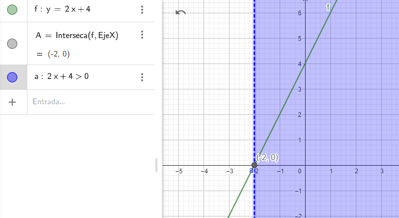

Inecuaciones del tipo ax+b>0
Para hallar las soluciones a la inecuación 2x+4>0 debemos encontrar todos los valores que cumplan la desigualdad.
Gráficamente se trata de hallar todos los valores de x que hacen que la gráfica de la función y=2x+4 quede por encima del eje de abscisas, ya que todos estos puntos tienen como ordenada (valor de y) un número mayor que 0.

Tal y como observamos en la imagen las soluciones de dicha inecuación son todos los valores mayores que -2, punto de corte de la gráfica con el eje de abscisas.Es decir,
x∈ (-2, +∞)
De forma análoga se resuelve la inecuación 2x+4<0, tomando los valores que hacen que la gráfica esté por debajo del eje de abscisas. En este caso la solución es: x∈ (-∞, 2).